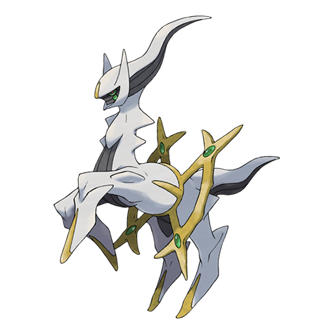

Arceus Weakness (2x)
Fighting
#493 · Normal · Alpha Pokemon · Gen 4
Arceus sits at the top of the Sinnoh myth: a Normal-type with 120 in every stat, a 720 total, and an ability that rewrites its own type chart. No evolution stage is attached to it in either direction.

BST 720
Abilities: Multitype · Evolution stage: none
The card above reads straight off the full 18-type grid on the Pokemon Type Chart, and a held plate can move it.
Fighting
Ghost
Mew is the origin story and Mewtwo is the other experiment. Both sit close to this page.
The 720-total original
The Sinnoh dex labels it the Alpha Pokemon, and number 493 earns the name. Six stats at 120 apiece add up to 720, the highest total in the series when Generation 4 arrived. The default typing is Normal, the ability is Multitype, and the evolution line is a single stage with nothing before or after it.
A spread like that is unusual even in later generations. Most Pokemon with a huge total shove the points into two or three columns and leave the rest thin. Arceus does the opposite: no column is a hole you have to patch, and no column is a weapon that wins a fight by itself.
Multitype is what makes this entry awkward to summarise in one card. A held plate changes Arceus's type, so the weakness list above is the Normal-type reading rather than the finished picture. Put a plate on and the chart moves with it. That is why any answer to what beats Arceus begins with a second question.
With no plate it takes double damage from Fighting and nothing whatsoever from Ghost. There are no resistances at all, and that single immunity is the only defensive line the type offers. Everything else lands neutral, which leaves the six 120s to do the absorbing.
Three columns are defensive: 120 HP, 120 Defense, 120 Special Defense. Together they make Arceus one of the hardest Pokemon in the game to remove in a single hit. The other three are 120 Attack, 120 Special Attack and 120 Speed, which puts it ahead of most of the dex on the turn order and gives any attack it carries real weight.
There is no growth stage to chase, either. Nothing evolves out of it, so the numbers on the card are the numbers you keep forever. A Pokemon built like that wants coverage over setup: land the right move, survive the return hit, and let the spread carry the rest. Compare it with the usual 600-total crowd from earlier generations, which tends to be fast and thin or slow and heavy rather than even in every column.
Fighting doubles up on the default typing. Ghost is a flat zero, making it the one matchup Arceus can stand in front of and ignore. Nothing comes back at half damage. The neutral list is the rest of the chart, which in practice is eighteen types minus two.
So Fighting-type attackers are the ones worth planning around, and a Ghost-type route is free ground. Anyone running a plate build should read the card again after the plate goes on, because that whole column can flip direction. A plate that turns Fighting into a neutral hit clears the only entry on the weakness side, and that is the entire appeal of the setup.
You will not trip over an Arceus on a route, so planning starts on paper. Sketch the squad in the Nuzlocke Team Builder, fill any empty slot with the Random Pokemon Picker, then arrange the final six in the Pokemon Team Picker.
Then the fine print: choose a nature with the Pokemon Nature Chart and check the numbers in the Pokemon IV Calculator. If you would rather not run the arithmetic, spin the Pokemon Wheel Spinner or let Who's That Pokemon call it for you.
Variants split the usual way. The odds for a hunt live in Pokemon Shiny Odds, the Random Shiny Pokemon Generator covers the colour-variant end, and the Random Mega Pokemon Generator handles the big-form side of the dex.
The Alpha Pokemon has been handed out through events rather than found in the wild, and in Generation 4 the key was the Azure Flute item. That history is the honest answer to how you get one: an official distribution, not a route, a cave or a long soft-reset session.
Plates are the other half of the story. They are the reason a single Pokemon page needs a footnote under its weakness card. The type, and with it the whole defensive sheet, is a choice a trainer makes before the first turn rather than something fixed at capture.
Seventeen plates exist in the games, one for every type except Normal, which Arceus already is. Holding one swaps the typing through Multitype and changes nothing else: same 720, same six 120s, entirely different defensive sheet. A plate is less a power boost than a change of identity.
That is why Arceus builds tend to get described by the problem they solve. Need something that shrugs off a particular attack type? Take the plate that resists it. Want the Fighting weakness gone rather than merely covered? Look for a typing whose chart leaves that column neutral or halved. The Pokemon never changes; the matchup is the variable.
FAQ
Arceus is a Normal type by default, which gives it one weakness and one immunity. Held plates change that typing through Multitype, so the card above is the starting point rather than the whole range.
Fighting hits it for double damage. Ghost does nothing to it at all, and no type lands for half damage. That leaves one weakness and one immunity, with the rest of the chart coming in neutral.
No. Arceus is a single-stage Pokemon with nothing before it and nothing after it, so there is no stage chart to follow.
Multitype. Holding a plate switches its type to match that plate, which is why two Arceus builds can carry completely different weakness lists.
There is no evolution chart, because nothing in the line changes stage. What changes is the type: plates, not levels, are the mechanic attached to Arceus.
Arceus is classed as a mythical Pokemon. It has only ever been distributed through events, which is why finding one involves an item or a gift rather than a map location. The Sinnoh myths credit it with shaping the region, and that reputation is why it sits at the very end of the Generation 4 dex.